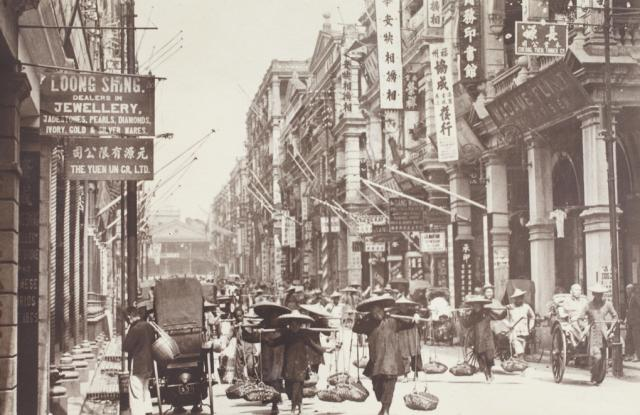
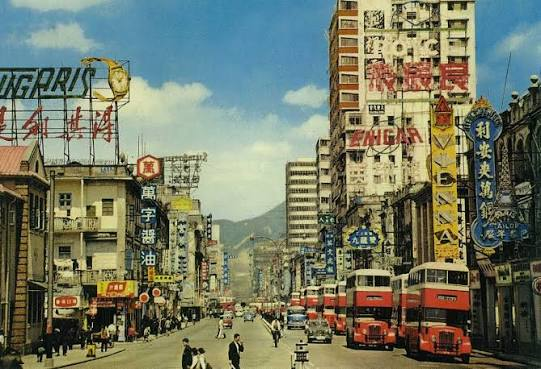
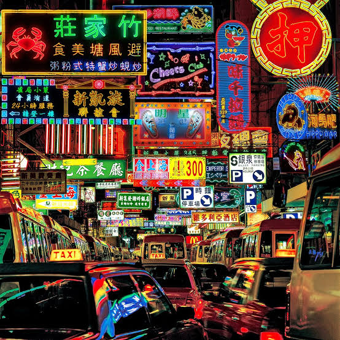
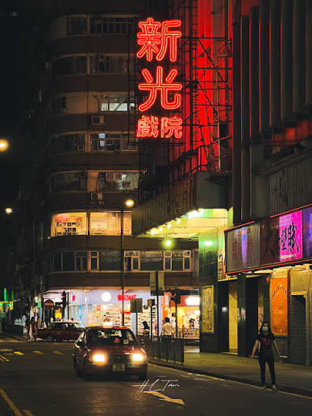

A City of Neon
From the 1920s onward, neon signs began transforming Hong Kong's streets. By the 1970s and 1980s, colorful advertisements illuminated restaurants, cinemas, and shops, creating one of the city's most recognizable urban landscapes.
Neon Through Time
1920s
The Arrival

Neon signs first appeared in Hong Kong, introducing a new way for businesses to advertise.
1950s–60s
The Expansion

Restaurants, cinemas, and shops increasingly used neon signs to attract customers.
1970s–80s
The Heyday

Elaborate neon signs filled commercial streets, becoming an important part of Hong Kong's visual identity.
More Than Advertisements
Neon signs gave each business its own identity. From restaurants to cinemas, their colorful designs and Chinese characters helped shape the character of Hong Kong's streets.

Made by Hand
Behind every glowing sign was the work of skilled craftsmen. Glass
tubes were heated and carefully bent by hand to create Chinese
characters, symbols, and unique designs.
Each sign reflected both the identity of a business and the
craftsmanship behind Hong Kong's neon culture.